# install.packages("UsingR")
library(UsingR)
plot(father.son)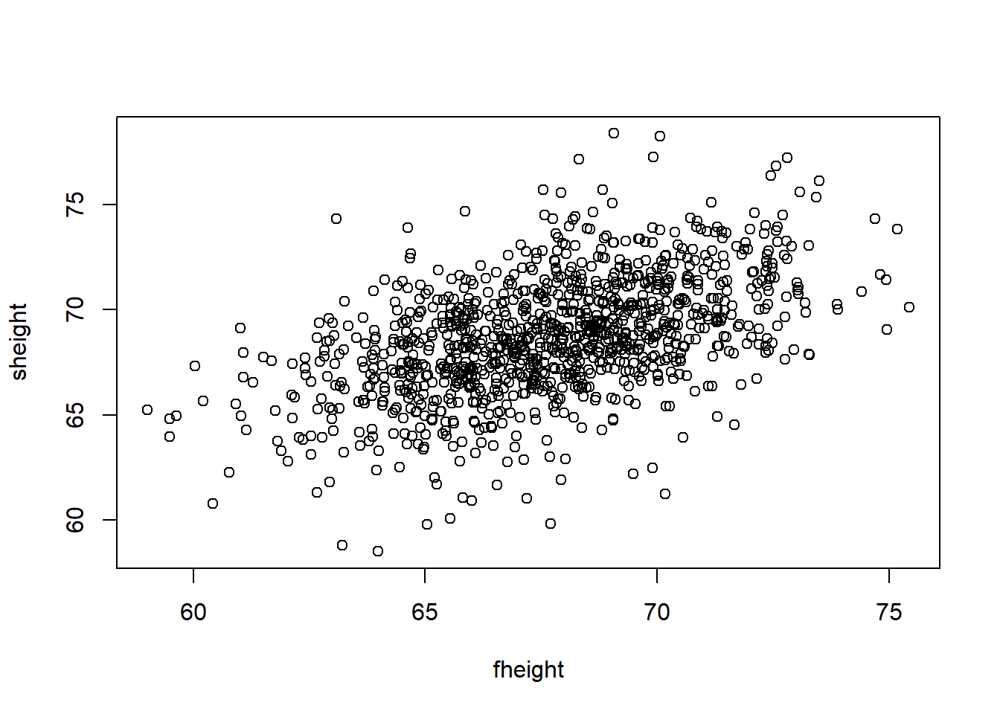
단순선형회귀분석은 하나의 설명변수와 하나의 반응변수 사이의 평균적인 선형 관계를 모형으로 표현하는 방법이다. 회귀분석을 처음 배울 때 가장 중요한 것은 회귀직선을 단순한 선으로 보는 것이 아니라, 자료의 평균적 경향을 요약하는 통계모형으로 이해하는 것이다. 이 장에서는 산점도와 상관분석을 통해 두 변수의 관계를 탐색한 뒤, 단순선형회귀모형, 회귀계수 추정, 모형 적합도 평가, 회귀계수 검정, 신뢰구간과 예측구간, 잔차분석까지 차례대로 다룬다.
산점도는 회귀분석의 출발점이다. 두 변수 사이에 선형적인 경향이 있는지, 이상값이 있는지, 특정 구간에서 관계가 달라지는지, 분산이 일정한지 등을 시각적으로 확인할 수 있다. 회귀모형을 적합하기 전에 산점도를 확인하지 않으면 자료의 구조와 맞지 않는 모형을 적용할 위험이 있다.
# install.packages("UsingR")
library(UsingR)
plot(father.son)
만약 산점도에서 두 변수 간의 관계가 선형으로 보인다면 단순선형회귀분석을 통해 적합한 함수식을 구할 수 있음
수학적으로, 1차 직선 \(y=\beta_0+\beta_1x\)에서 \(\beta_0\)는 절편, \(\beta_1\)은 기울기를 나타냄
회귀분석은 산점도를 통한 변수간의 관계를 살펴보는 것으로부터 시작함
Example: 차량의 속도(speed)와 정차거리(stopping distance)
head(cars, 10) speed dist
1 4 2
2 4 10
3 7 4
4 7 22
5 8 16
6 9 10
7 10 18
8 10 26
9 10 34
10 11 17plot(cars)
plot(cars)
abline(lm(dist~speed, data=cars), col="red")
lines(cars$speed,predict(lm(dist~speed+I(speed^2), data=cars)), col="blue")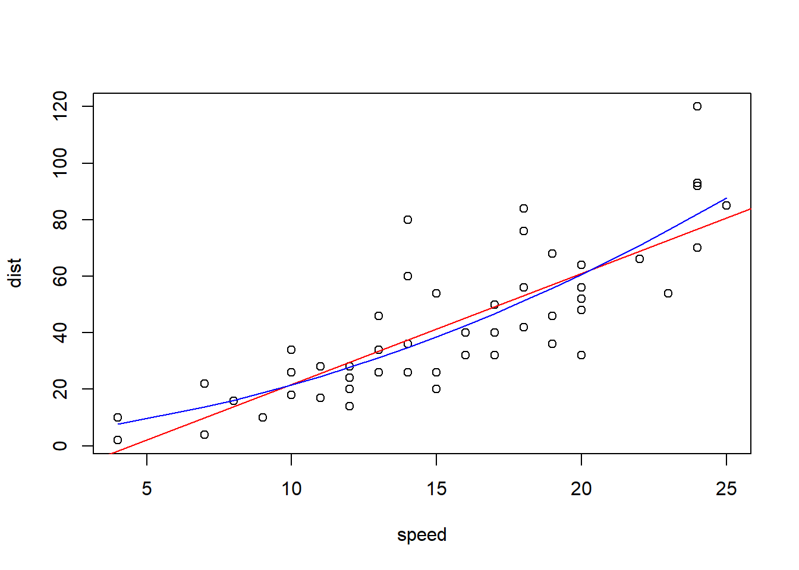
상관분석은 두 연속형 변수 사이의 선형적 관련성을 하나의 수치로 요약하는 방법이다. 다만 상관계수는 두 변수의 관계를 대칭적으로 요약하는 지표이므로, 어느 변수가 원인이고 어느 변수가 결과인지 구분하지 않는다. 반면 회귀분석은 반응변수와 설명변수를 구분하고, 설명변수가 변할 때 반응변수의 평균이 어떻게 변하는지를 모형화한다.
\[ \rho=cor(X,Y)=\frac{Cov(X,Y)}{\sqrt{Var(X)Var(Y)}} \]
# install.packages("UsingR")
library(UsingR)
plot(father.son, xlab="X", ylab="Y")
library(DescTools)
DrawEllipse(mean(father.son$fheight),mean(father.son$sheight),radius.x=9,radius.y=3.5,rot=10.3,border="red", lwd=1.5)
par(new=T)
plot(father.son, xlab="X", ylab="Y")
abline(v=mean(father.son$fheight), lty=2, col="red")
abline(h=mean(father.son$sheight), lty=2, col="red")
points(mean(father.son$fheight),mean(father.son$sheight), cex=2, col="red", pch=19)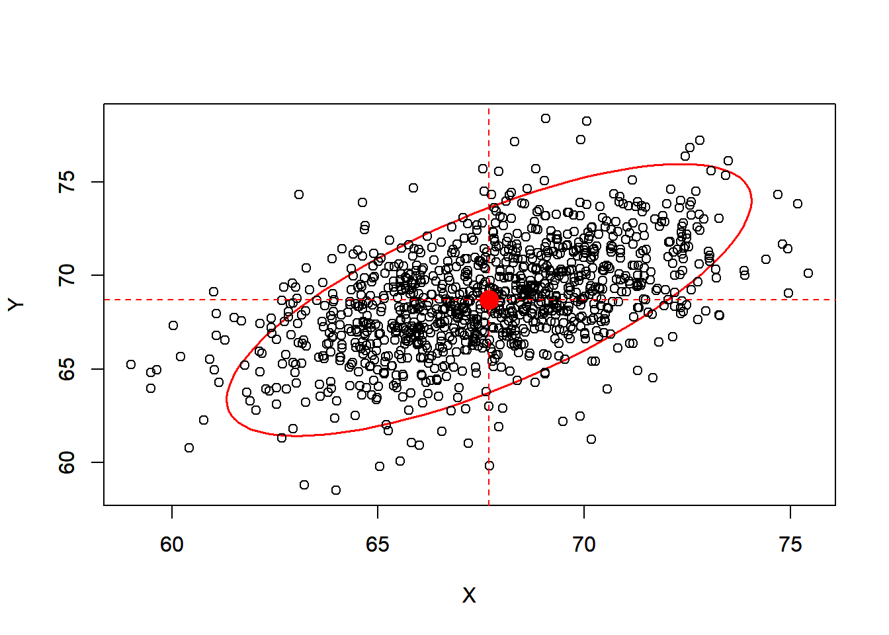
\[ \bar{X}=\frac{1}{n}\sum_{i=1}^n X_i, \,\,\, \bar{Y}=\frac{1}{n}\sum_{i=1}^n Y_i, \,\,\, \hat{Cov}(X,Y)=\frac{1}{n-1}\sum_{i=1}^n (X_i-\bar{X})(Y_i-\bar{Y}) \]
\[ Z_X=\frac{X_i-\bar{X}}{S_X}, \,\,\, Z_Y=\frac{Y_i-\bar{Y}}{S_Y} \]
표준화된 \(Z\)는 평균이 0이고 표준편차가 1이 됨
표준화된 \(Z_X\)와 \(Z_Y\)의 공분산을 상관계수(correlation coefficient)라 함
\[ \hat{Cov}(Z_X,Z_Y)=\hat{Cor}(Z_X,Z_Y)=\frac{1}{n-1}\sum_{i=1}^n Z_{Xi}Z_{Yi}=\frac{1}{n-1}\sum_{i=1}^n(\frac{X_i-\bar{X}}{S_X})(\frac{Y_i-\bar{Y}}{S_Y}) \]
\[ \begin{align} r=\hat{Cor}(X,Y)=\frac{\hat{Cov}(X,Y)}{S_XS_Y}&=\frac{1}{n-1}\sum_{i=1}^n(\frac{X_i-\bar{X}}{S_X})(\frac{Y_i-\bar{Y}}{S_Y})\\ &=\frac{\sum_{i=1}^n(X_i-\bar{X})(Y_i-\bar{Y})}{\sqrt{\sum_{i=1}^n(X_i-\bar{X})^2\sum_{i=1}^n(Y_i-\bar{Y})^2}} \end{align} \]
\[ -1 \le \rho (r) \le 1 \]
rho <- 0.9
x <- rnorm(100,0,1)
y <- rnorm(100,rho*x, sqrt(1-rho^2))
plot(x,y)
abline(lm(y~x))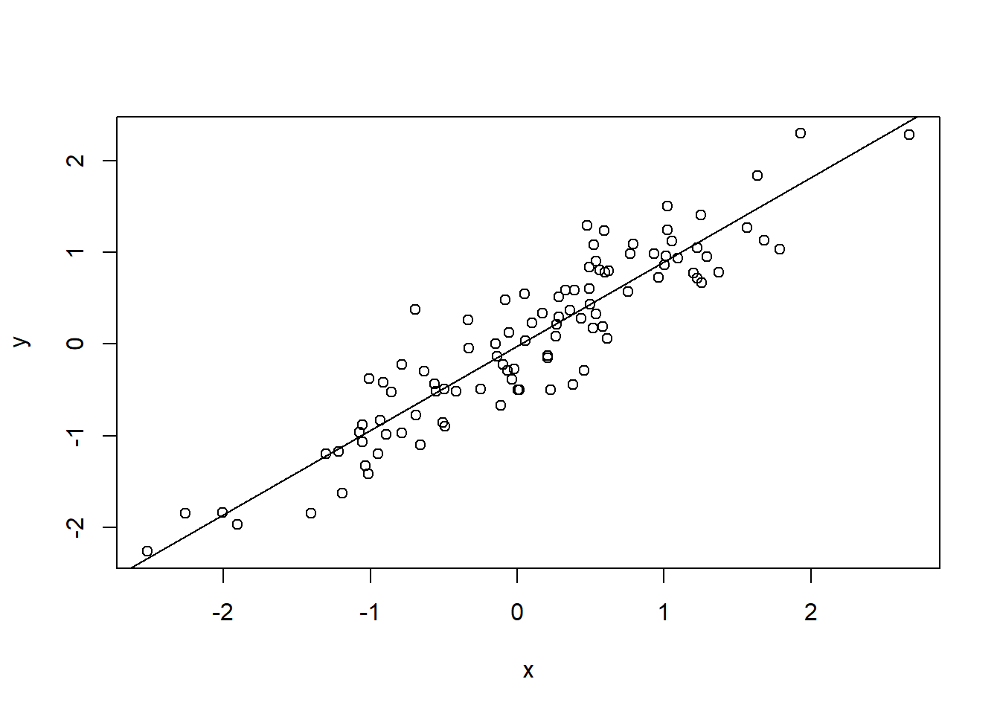
rho <- -0.9
x <- rnorm(100,0,1)
y <- rnorm(100,rho*x, sqrt(1-rho^2))
plot(x,y)
abline(lm(y~x))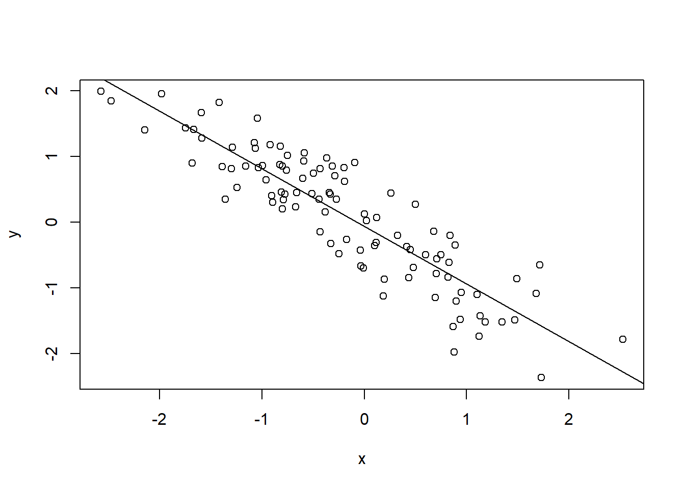
rho <- -0.1
x <- rnorm(100,0,1)
y <- rnorm(100,rho*x, sqrt(1-rho^2))
plot(x,y)
abline(lm(y~x))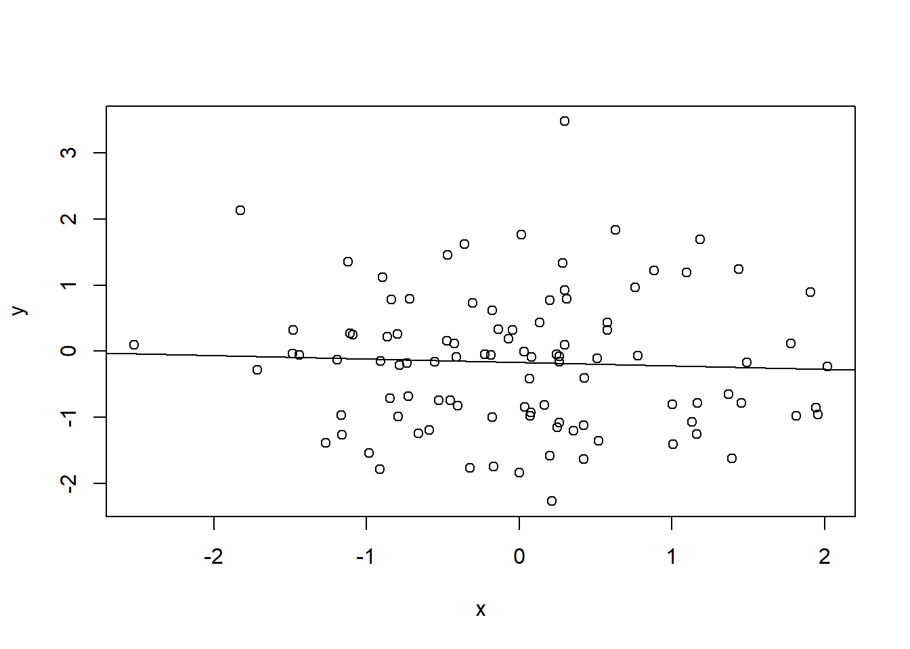
x <- rnorm(100,0,1)
y <- x^2
plot(x,y)
curve(x^2, add=T)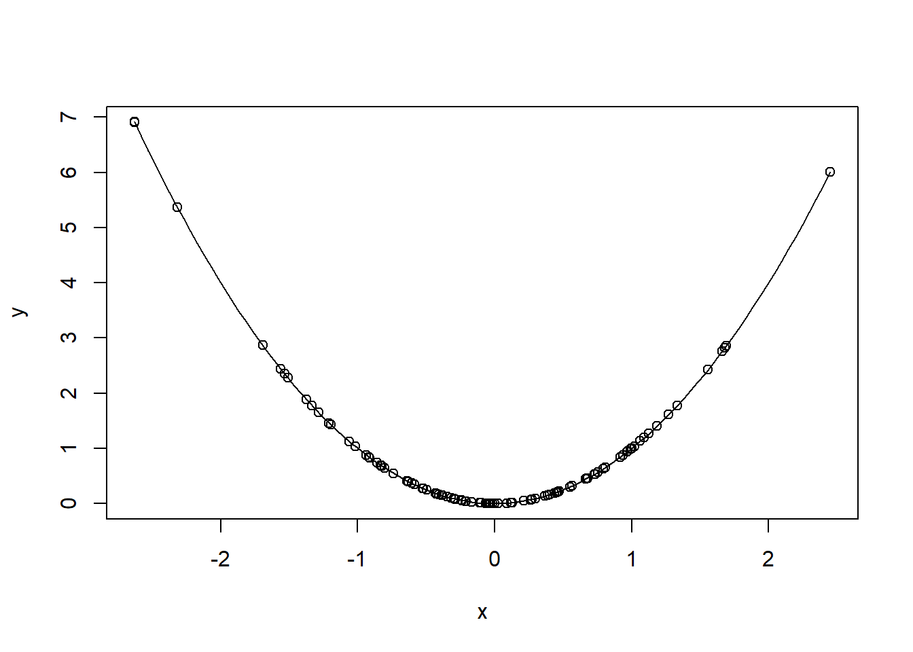
cor(x,y)[1] -0.2091854주의 사항
상관계수가 크다고 해서 반드시 인과관계가 있는 것은 아니다. 또한 상관계수가 작다고 해서 두 변수 사이에 아무 관계가 없다고 단정할 수도 없다. 산점도를 함께 확인하여 선형관계, 비선형관계, 이상값의 영향을 함께 검토해야 한다.
\[ T=\frac{r\sqrt{n-2}}{\sqrt{1-r^2}} \sim t_{n-2} \]
\[ |T| \ge t_{n-2}(\alpha/2) \ \text{ then reject null hypothesis} \]

data(cars)
head(cars) speed dist
1 4 2
2 4 10
3 7 4
4 7 22
5 8 16
6 9 10cor(cars$speed, cars$dist)[1] 0.8068949cor.test(cars$speed, cars$dist)
Pearson's product-moment correlation
data: cars$speed and cars$dist
t = 9.464, df = 48, p-value = 1.49e-12
alternative hypothesis: true correlation is not equal to 0
95 percent confidence interval:
0.6816422 0.8862036
sample estimates:
cor
0.8068949 set.seed(1)
gibbs<-function(a,b, rho, n){
theta1 <- matrix(NA,n,1)
theta2 <- matrix(NA,n,1)
theta1[1]<-a
theta2[1]<-b
for(i in 2:n){
theta1[i] <- rho*theta2[i-1] + sqrt(1-rho^2)*rnorm(1)
theta2[i] <- rho*theta1[i] + sqrt(1-rho^2)*rnorm(1)
}
cbind(theta1,theta2)
}
gdata<-gibbs(0,0,0.05,100)
x<-as.data.frame(gdata)
head(x) V1 V2
1 0.0000000 0.0000000
2 -0.6256703 0.1521301
3 -0.8269769 1.5519366
4 0.4066925 -0.7991075
5 0.4468640 0.7597444
6 0.6130484 -0.2743540plot(x$V1, x$V2)
abline(lm(x$V2~x$V1))
text(-1.5,2,paste("r=",round(cor(x$V1, x$V2),4),sep=""),cex=1.5)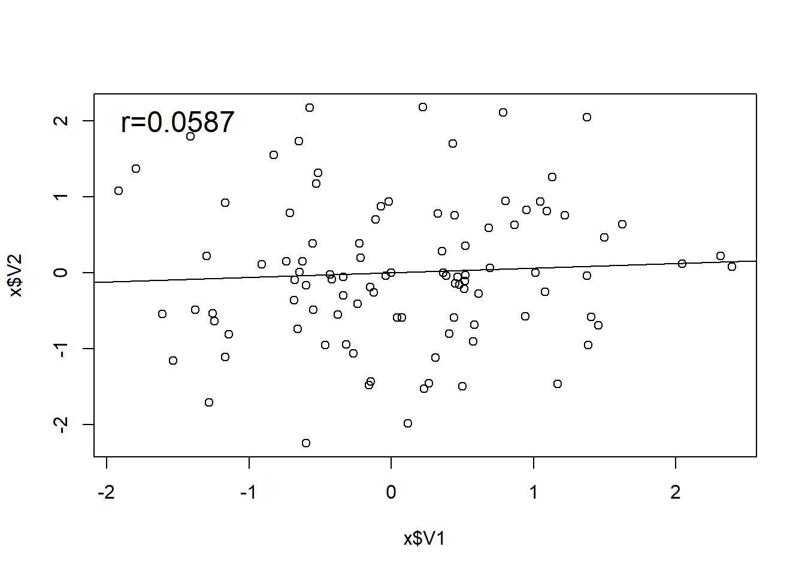
x <- seq(-1,1,by=0.01)
y <- x^2
plot(x,y)
abline(lm(y~x))
text(0,1,paste("r=",round(cor(x, y),4),sep=""),cex=1.5)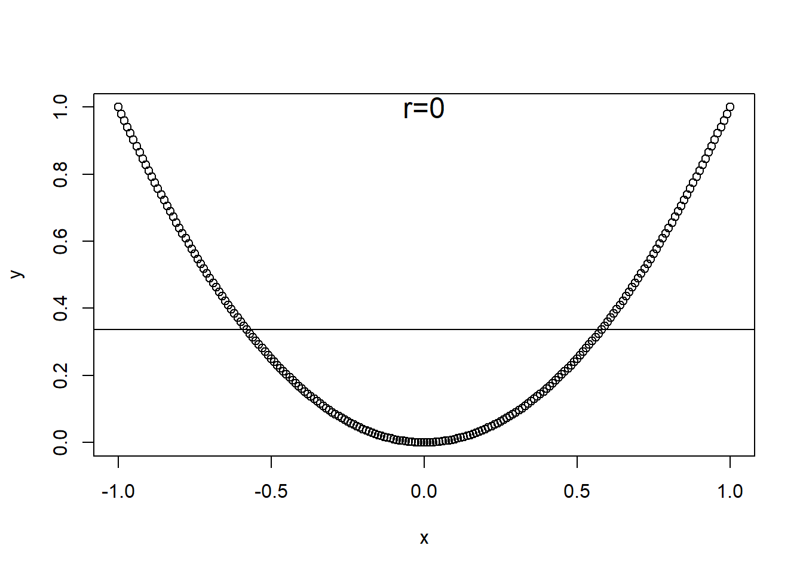
두 경우 모두 표본상관계수는 0에 가깝지만 첫번째 그림은 선형관계가 거의 없는 편임
두 번째 그림은 곡선 관계가 매우 강함에도 불구하고 표본상관계수는 0에 가까움
즉, 표본상관계수 \(r\)은 직선에 대한 연관성 측도이지, 직선이 아닌 다른 연관성에 대한 측도가 아님
단순선형회귀모형은 두 변수 사이의 관계를 “직선 하나”로 요약하는 것이 아니라, 설명변수 \(X\)가 주어졌을 때 반응변수 \(Y\)의 조건부 평균 \(E(Y|X)\)를 선형식으로 표현하는 모형이다. 실제 관측값은 이 평균적인 직선 주변에 흩어져 있으며, 이 차이를 오차항으로 표현한다.
\[ Y=\beta_0 + \beta_1X \]
\[ Y_i=\beta_0+\beta_1X_i+\epsilon_i, \,\,\, i=1,2,\ldots, n \]
여기서 \(\epsilon_i\)는 모형이 설명하지 못하는 이론적 오차이다. 실제 자료에서는 오차항을 직접 관측할 수 없으므로, 관측값 \(Y_i\)와 적합값 \(\hat{Y}_i\)의 차이인 잔차(residual) \(e_i=Y_i-\hat{Y}_i\)를 이용하여 모형의 적절성을 평가한다.
\[ \mathbf{Y}=\mathbf{X}\beta+\mathbf{\epsilon} \]
\[ \mathbf{Y}=\begin{pmatrix}Y_1\\Y_2\\\vdots\\ Y_n \end{pmatrix}, \,\,\, x_i=\begin{pmatrix}1 \\ X_i \end{pmatrix}, \,\,\, \mathbf{X}=\begin{pmatrix}x_1' \\ \vdots \\x_n' \end{pmatrix}=\begin{pmatrix}1 & X_1 \\ \vdots &\vdots \\1 & X_n \end{pmatrix}, \,\,\, \beta=\begin{pmatrix} \beta_0 \\ \beta_1 \end{pmatrix}, \,\,\, \epsilon=\begin{pmatrix} \epsilon_1 \\ \epsilon_2 \\ \vdots \\ \epsilon_n \end{pmatrix} \]
\[ E(Y_i)=\beta_0+\beta_1X_i \]
\[ E(Y_i|X_i)=\beta_0+\beta_1X_i \]
x <- 0:8
y <- 2*x+1
x1 <- dnorm(seq(-3,3,length=100),0,0.9)
plot(x,y, type="l", ylim=c(0,16), xlim=c(0,8), xlab="X", ylab="Y")
segments(2,2,2,8, lty=2, col="blue")
lines(x1+2,seq(2,8,length=100),col="blue")
segments(4,6,4,12, lty=2, col="blue")
lines(x1+4,seq(6,12,length=100),col="blue")
segments(6,10,6,16, lty=2, col="blue")
lines(x1+6,seq(10,16,length=100),col="blue")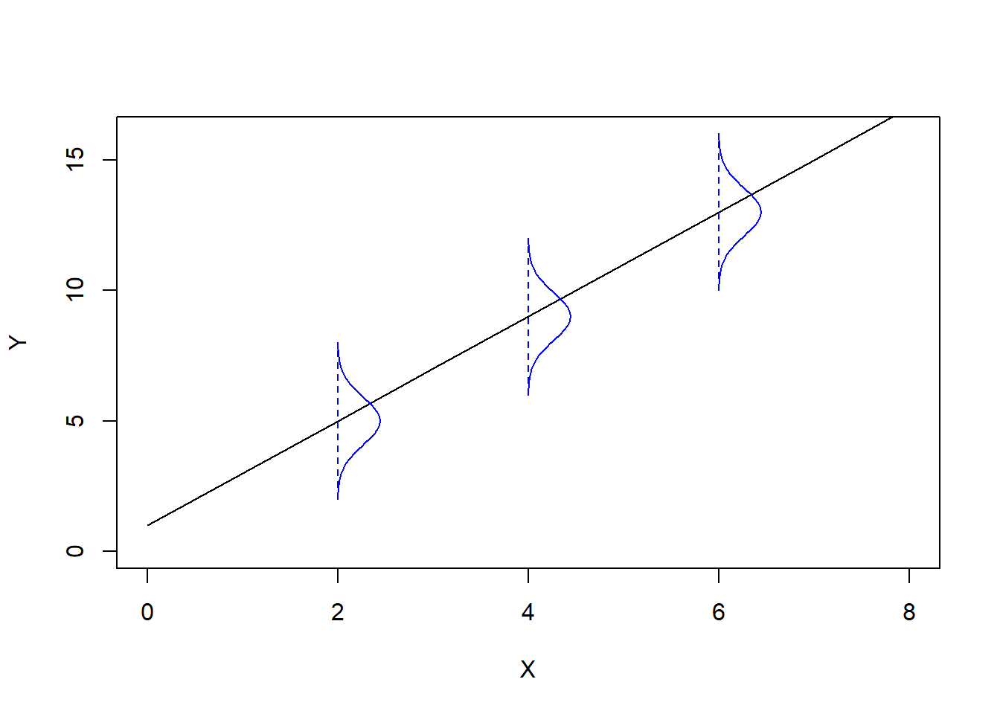
예시
차량 속도와 정차거리 자료에서 기울기가 양수라면 속도가 증가할수록 평균 정차거리가 증가한다는 뜻이다. 이때 기울기는 “속도가 한 단위 증가할 때 평균 정차거리가 몇 단위 증가하는가”로 해석한다.
산점도를 그려 변수 간의 관계를 살펴보고 예측
회귀모형 설정 및 모수추정: 최소제곱법 등을 이용하여 모형에 포함된 모수를 추정
회귀계수에 대한 유의성 검정: 각 회귀계수의 유의성 검정
모형 적합도: \(R^2\)(결정계수), \(R_{adj}^2\)(수정된 결정계수) 등 여러 가지 통계량들을 이용하여 모형의 적합성에 대해 판단
모형 진단: 추정한 모형의 적합도를 진단하여 적절한 모형 여부를 판단. 잔차그림을 통해 독립성, 등분산성을 검토하고 \(Q-Q\) 그림 등을 통해 정규성 판단
회귀모형을 설정했다면 다음 단계는 자료에 가장 잘 맞는 절편과 기울기를 추정하는 것이다. 단순선형회귀분석에서는 주로 최소제곱법을 사용한다. 최소제곱법은 관측값과 회귀직선 사이의 수직 거리, 즉 잔차의 제곱합을 가장 작게 만드는 직선을 찾는 방법이다.
분석하고자 하는 회귀모형을 결정한 후에는 모형에 포함된 모수를 추정해야 함
모수 추정량
최소제곱법(least squares method)은 표본 데이터로부터 회귀계수를 추정하는 방법 중 가장 널리 이용되는 방법으로 오차제곱합을 최소화 하는 방법으로 회귀계수 추정
오차제곱합
# 인터넷 연결이 없는 환경에서도 렌더링되도록 예제 데이터를 직접 생성한다.
set.seed(2026)
adv <- data.frame(
TV = seq(10, 300, length.out = 100)
)
adv$sales <- 7 + 0.045 * adv$TV + rnorm(100, mean = 0, sd = 2.2)
fit <- lm(sales ~ TV, data = adv)
plot(x = adv$TV, y = adv$sales, pch = 20,
xlab = "TV budget (1,000 USD)",
ylab = "Sales (1,000 units)")
abline(fit, lwd = 2)
segments(x0 = adv$TV, y0 = predict(fit),
x1 = adv$TV, y1 = adv$sales)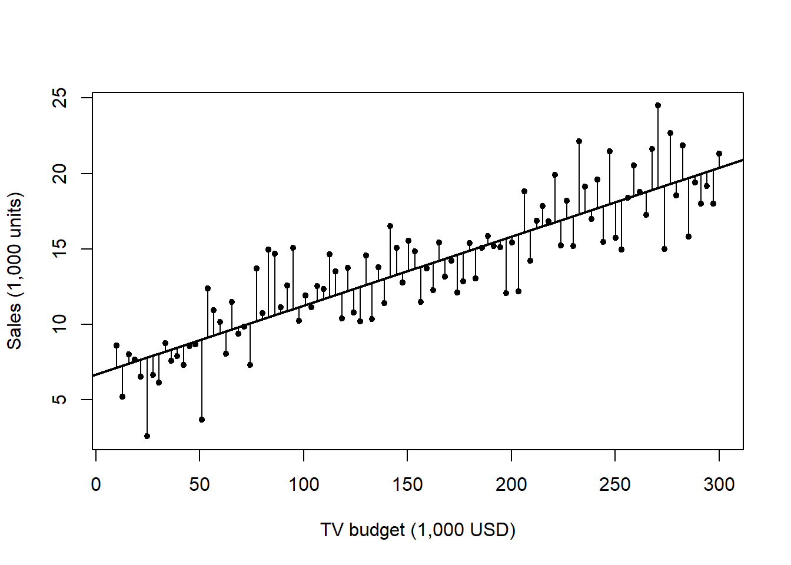
위 그림에서 각 점과 회귀직선 사이의 세로선은 잔차를 나타낸다. 최소제곱법은 이 잔차들을 단순히 더하는 것이 아니라 제곱하여 더한 값을 최소화한다. 잔차를 제곱하는 이유는 양의 잔차와 음의 잔차가 서로 상쇄되는 것을 막고, 큰 오차에 더 큰 벌점을 주기 위해서이다.
\[ RSS=S(\beta_0, \beta_1)=\sum_{i=1}^n \epsilon_i^2=\sum_{i=1}^n (Y_i-\beta_0 -\beta_1X_i )^2 \]
\[ \hat{\beta}_1=\frac{S_{XY}}{S_{XX}}=\frac{\sum_{i=1}^n(X_i-\bar{X})(Y_i-\bar{Y})}{\sum_{i=1}^n(X_i-\bar{X})^2}=\frac{\sum_{i=1}^nX_iY_i-n\bar{X}\bar{Y}}{\sum_{i=1}^nX_i^2-n\bar{X}^2} \]
\[ \hat{\beta}_0=\bar{Y}-\hat{\beta}_1\bar{X} \]
여기서
\[ \bar{X}=\frac{1}{n}\sum_{i=1}^n X_i, \,\,\, \bar{Y}=\frac{1}{n}\sum_{i=1}^nY_i \]
\[ S_{XX}=\sum_{i=1}^n(X_i-\bar{X})^2 \]
\[ S_{YY}=\sum_{i=1}^n(Y_i-\bar{Y})^2 \]
\[ S_{XY}=\sum_{i=1}^n(X_i-\bar{X})(Y_i-\bar{Y}) \]
\[ \hat{Y}=\hat{\beta}_0+\hat{\beta}_1X \]
오차제곱 합 \[ S=S(\beta_0, \beta_1)=\sum_{i=1}^n \epsilon_i^2=\sum_{i=1}^n (Y_i-\beta_0 -\beta_1X_i )^2 \]
\(\beta_0\)와 \(\beta_1\)에 대해 각각 편미분을 하여 0으로 놓으면
\[ \frac{\partial S}{\partial \beta_0}=-2\sum_{i=1}^n (Y_i-\beta_0-\beta_1X_i)=0 \]
\[ \frac{\partial S}{\partial \beta_1}=-2\sum_{i=1}^n X_i(Y_i-\beta_0-\beta_1X_i)=0 \]
\[ \beta_0n+\beta_1\sum_{i=1}^nX_i=\sum_{i=1}^nY_i \,\,\,\,\,\, (1) \]
\[ \beta_0\sum_{i=1}^nX_i+\beta_1\sum_{i=1}^nX_i^2=\sum_{i=1}^nX_iY_i \,\,\,\,\, (2) \]
\[ \begin{align} \beta_0 &= \frac{1}{n}(\sum_{i=1}^nY_i-\beta_1\sum_{i=1}^nX_i) \\ &=\bar{Y}-\beta_1\bar{X} \end{align} \]
\[ \begin{align} (\bar{Y}-\beta_1\bar{X})\sum_{i=1}^n X_i+\beta_1\sum_{i=1}^nX_i^2 &=\sum_{i=1}^nX_iY_i\\ \Rightarrow \beta_1(\sum_{i=1}^nX_i^2-\bar{X}\sum_{i=1}^nX_i) &= \sum_{i=1}^nX_iY_i-\bar{Y}\sum_{i=1}^nX_i \\ \Rightarrow \beta_1&=\frac{\sum_{i=1}^nX_i(Y_i-\bar{Y})}{\sum_{i=1}^nX_i^2-n\bar{X}^2} \\ &=\frac{\sum_{i=1}^n(X_i-\bar{X})(Y_i-\bar{Y})}{\sum_{i=1}^n(X_i-\bar{X})^2}\\ &=\frac{S_{XY}}{S_{XX}} \end{align} \]
\[ \begin{align} \hat{\beta}_1&=\frac{\sum_{i=1}^n(X_i-\bar{X})(Y_i-\bar{Y})}{\sum_{i=1}^n(X_i-\bar{X})^2}\\ \hat{\beta}_0&=\bar{Y}-\hat{\beta}_1\bar{X} \end{align} \]
\[ \hat{\sigma}^2=\frac{RSS}{n-2} \]
여기서
\[ RSS=\sum_{i=1}^n(Y_i-\hat{Y}_i)^2=\sum_{i=1}^n(Y_i-\bar{Y})^2-\hat{\beta}_1^2\sum_{i=1}^n(X_i-\bar{X})^2 \]
\[ \hat{Y}_i = \hat{\beta}_0+\hat{\beta}_1X_i \]
이고,
\[ \hat{\beta}_0 = \bar{Y}-\hat{\beta}_1\bar{X} \]
이므로
\[ \hat{Y}_i = \bar{Y}+\hat{\beta}_1(X_i-\bar{X}) \]
이다. 따라서 잔차는
\[ Y_i-\hat{Y}_i = (Y_i-\bar{Y}) - \hat{\beta}_1(X_i-\bar{X}) \]
이고, 잔차제곱합(RSS)은
\[ \begin{aligned} RSS &= \sum_{i=1}^{n}(Y_i-\hat{Y}_i)^2 \\[4pt] &= \sum_{i=1}^{n} \left[ (Y_i-\bar{Y}) - \hat{\beta}_1(X_i-\bar{X}) \right]^2 \\[4pt] &= \sum_{i=1}^{n}(Y_i-\bar{Y})^2 - 2\hat{\beta}_1 \sum_{i=1}^{n} (X_i-\bar{X})(Y_i-\bar{Y}) \\ &\qquad + \hat{\beta}_1^2 \sum_{i=1}^{n}(X_i-\bar{X})^2. \end{aligned} \]
OLS 추정량
\[ \hat{\beta}_1 = \frac{ \sum_{i=1}^{n}(X_i-\bar{X})(Y_i-\bar{Y}) }{ \sum_{i=1}^{n}(X_i-\bar{X})^2 } \]
으로부터
\[ \sum_{i=1}^{n}(X_i-\bar{X})(Y_i-\bar{Y}) = \hat{\beta}_1 \sum_{i=1}^{n}(X_i-\bar{X})^2 \]
이므로 이를 대입하면
\[ \begin{aligned} RSS &= \sum_{i=1}^{n}(Y_i-\bar{Y})^2 - 2\hat{\beta}_1^2 \sum_{i=1}^{n}(X_i-\bar{X})^2 + \hat{\beta}_1^2 \sum_{i=1}^{n}(X_i-\bar{X})^2 \\[4pt] &= \sum_{i=1}^{n}(Y_i-\bar{Y})^2 - \hat{\beta}_1^2 \sum_{i=1}^{n}(X_i-\bar{X})^2. \end{aligned} \]
따라서 최종적으로
\[ RSS = \sum_{i=1}^{n}(Y_i-\hat{Y}_i)^2 = \sum_{i=1}^{n}(Y_i-\bar{Y})^2 - \hat{\beta}_1^2 \sum_{i=1}^{n}(X_i-\bar{X})^2 \]
\[ r=\frac{S_{XY}}{\sqrt{S_{XX}}\sqrt{S_{YY}}}=\frac{\sqrt{S_{XX}}}{\sqrt{S_{YY}}}\hat{\beta}_1 \]
오차항이 정규분포를 따른다고 가정할 수 있다면 오차항에 대한 가능도함수(likelihood function)를 구할 수 있으므로 가능도함수를 이용한 추정을 할 수 있음
이변량 데이터 \((X_1,Y_1), (X_2,Y_2), \ldots, (X_n,Y_n)\)에 대한 조건부 가능도함수는
\[ \begin{align} L(Y_1,\cdots, Y_n|\beta_0, \beta_1, \sigma^2, X_1,\cdots, X_n) &=\prod_{i=1}^n P(Y_i|\beta_0,\beta_1,\sigma^2, X_i) \\ &=\prod_{i=1}^n(2\pi\sigma^2)^{-1/2}exp(-\frac{(Y_i-\beta_0-\beta_1X_i)^2}{2\sigma^2}) \\ &=(2\pi\sigma^2)^{-n/2}exp(-\frac{\sum_{i=1}^n(Y_i-\beta_0-\beta_1X_i)^2}{2\sigma^2}) \end{align} \]
가능도함수를 log 변환을 하면 모수 \(\beta\)에 영향을 받는 부분은 \(-\sum_{i=1}^n(Y_i-\beta_0-\beta_1X_i)^2\) 부분만 남게 됨
결국 가능도함수 추정량은 잔차제곱합을 최소화하는 문제와 동일해짐
따라서
\[ \begin{align} \hat{\beta}_1&=\frac{\sum_{i=1}^n(X_i-\bar{X})(Y_i-\bar{Y})}{\sum_{i=1}^n(X_i-\bar{X})^2}\\ \hat{\beta}_0&=\bar{Y}-\hat{\beta}_1\bar{X} \end{align} \]
\[ \hat{\sigma}_{ML}^2=\frac{1}{n}\sum_{i=1}^n (Y_i-\hat{\beta}_0-\hat{\beta}_1X_i)^2 \]
선형회귀모형에서 오차항의 기대값이 0이고 서로 독립이며 등분산인 경우, 회귀계수에 대한 최적선형불편추정량(best linear unbiased estimator: BLUE)은 최소제곱추정량임
\(\beta_0\)와 \(\beta_1\)에 대한 최소제곱추정량 \(\hat{\beta}_0\)과 \(\hat{\beta}_1\)은 불편추정량(unbiased estimator)
\[ E(\hat{\beta}_0)=\beta_0, \,\,\, E(\hat{\beta}_1)=\beta_1 \]
\[ Var(\hat{\beta}_0)=\sigma^2\Bigg(\frac{1}{n}+\frac{\bar{X}^2}{\sum_{i=1}^n(X_i-\bar{X})^2} \Bigg), \,\,\, Var(\hat{\beta}_1)=\frac{\sigma^2}{\sum_{i=1}^n(X_i-\bar{X})^2} \]
\[ E(\hat{\sigma}^2)=\sigma^2 \]
\[ \hat{Var}(\hat{\beta}_0)=\hat{\sigma}^2\Bigg(\frac{1}{n}+\frac{\bar{X}^2}{\sum_{i=1}^n(X_i-\bar{X})^2} \Bigg), \,\,\, \hat{Var}(\hat{\beta}_1)=\frac{\hat{\sigma}^2}{\sum_{i=1}^n(X_i-\bar{X})^2} \]
\[ \hat{se}(\hat{\beta}_0)=\sqrt{\hat{Var}(\hat{\beta}_0)}, \,\,\, \hat{se}(\hat{\beta}_1)=\sqrt{\hat{Var}(\hat{\beta}_1)} \]
회귀모형을 추정한 후에는 그 모형에 대한 적합성 또는 타당성에 대한 평가를 해야 함
적합도가 낮다면 적합도가 보다 높은 적절한 회귀모형을 찾을 필요가 있음
\[ \hat{Y}_i=\hat{\beta}_0+\hat{\beta}_1X_i, \,\,\, i=1,2,\ldots, n \]
\[ e_i=Y_i-\hat{Y}_i, \,\,\, i=1,2,\ldots, n \]
\[ \begin{align} 전체제곱합 &= 회귀제곱합 + 오차제곱합 \\ TSS &= SSR + SSE \\ \sum_{i=1}^n (Y_i-\bar{Y})^2 &= \sum_{i=1}^n(\hat{Y}_i-\bar{Y})^2 + \sum_{i=1}^n(Y_i-\hat{Y}_i)^2 \end{align} \]
전체평균과의 총변동은 TSS (total sum of squares), 회귀식에 의한 변동은 SSR (sum of squares due to regression), 오차에 의한 변동은 SSE (sum of squares due to error)
추정된 회귀식의 설명력에 대한 측도로 결정계수(determination coefficient) \(R^2\)을 사용
\(R^2\)은 전체 변동에 대해 추정된 회귀식에 의해 설명되는 양
\[ R^2=\frac{SSR}{TSS}=\frac{\sum_{i=1}^n (\hat{Y}_i-\bar{Y})^2}{\sum_{i=1}^n(Y_i-\bar{Y})^2} \]
해석 시 주의
\(R^2\)가 높다고 해서 반드시 좋은 모형이라고 할 수는 없다. 자료의 범위가 제한되어 있거나 이상값이 존재하는 경우 \(R^2\)가 왜곡될 수 있으며, 예측 목적에서는 새로운 자료에서의 예측오차를 함께 평가해야 한다.
| 요인(source) | 자유도(df) | 제곱합(SS) | 평균제곱합(MS) | \(F\)-통계량 | 유의수준 \(\alpha\) 기각값 |
|---|---|---|---|---|---|
| 모형(model) | \(1\) | \(SSR\) | \(MSR=\frac{SSR}{1}\) | \(F=\frac{MSR}{MSE}\) | \(F_{1,n-2}(\alpha)\) |
| 오차(error) | \(n-2\) | \(SSE\) | \(MSE=\frac{SSE}{n-2}\) | ||
| 총합(total) | \(n-1\) | \(TSS\) |
\[ F=\frac{(TSS-SSE)/1}{SSE/(n-2)} \sim F_{1,n-2} \]
\[ F \ge F_{1,n-2}(\alpha) \ \text{then reject null hypothesis} \]
\[ t=\frac{\hat{\beta}_0-\beta_0^*}{(\hat{Var}(\hat{\beta}_0))^{1/2}}=\frac{\hat{\beta}_0-\beta_0^*}{(MSE(\frac{1}{n}+\frac{\bar{X}^2}{\sum_{i=1}^n(X_i-\bar{X})^2}))^{1/2}} \sim t_{n-2} \]
\[ |t| \ge t_{n-2}(\alpha/2) \ \text{then reject null hypothesis} \]
\[ t=\frac{\hat{\beta}_1-\beta_1^*}{(\hat{Var}(\hat{\beta}_1))^{1/2}}=\frac{\hat{\beta}_1-\beta_1^*}{(\frac{MSE}{\sum_{i=1}^n(X_i-\bar{X})^2})^{1/2}} \sim t_{n-2} \]
\[ |t| \ge t_{n-2}(\alpha/2) \ \text{then reject null hypothesis} \]
회귀계수에 대한 신뢰구간은 회귀계수에 대한 검정과 마찬가지로 \(t\) 분포를 이용하여 구할 수 있음
\(\beta_j\)에 대한 \(100(1-\alpha)\%\) 신뢰구간(confidence interval)
\[ \hat{\beta}_j \pm t_{n-2}(\alpha/2)\sqrt{\hat{var}(\hat{\beta}_j)} \]
\[ \hat{\beta}_0 \pm t_{n-2}(\alpha/2)\sqrt{MSE(\frac{1}{n}+\frac{\bar{X}^2}{\sum_{i=1}^n(X_i-\bar{X})^2})} \]
\[ \hat{\beta}_1 \pm t_{n-2}(\alpha/2)\sqrt{\frac{MSE}{\sum_{i=1}^n(X_i-\bar{X})^2}} \]
\[ \hat{Y}=\hat\beta_0 + \hat\beta_1X=\bar Y-\hat\beta_1\bar X +\hat\beta_1X=\bar Y +\hat\beta_1 (X-\bar X) \]
\[ \hat Y=\sum_{i=1}^n \frac{1}{n} Y_i +(X-\bar X)\sum_{i=1}^n \frac{(X_i-\bar X)}{S_{XX}}Y_i=\sum_{i=1}^n \{\frac{1}{n} + \frac{(X_i-\bar X)(X-\bar X)}{S_{XX}} \}Y_i \]
\[ \begin{align} Var[(\hat{Y}|X)]&=Var(\bar Y +\hat\beta_1(X-\bar X)) \\ &=Var(\bar Y) + (X-\bar X)^2Var(\hat\beta_1) \\ &=\frac{\sigma^2}{n}+(X-\bar X)^2\frac{\sigma^2}{S_{XX}}=\sigma^2 \{\frac{1}{n}+\frac{(X-\bar X)^2}{S_{XX}} \} \end{align} \]
\[ \hat{Var}(\hat{Y}|X)=\hat{\sigma}^2\Bigg(\frac{1}{n} +\frac{(X-\bar{X})^2}{\sum_{i=1}^n (X_i-\bar{X})^2} \Bigg) \]
\[ \hat{Y} \pm t_{n-2}(\alpha/2)\times \hat{\sigma} \sqrt{\frac{1}{n} +\frac{(X-\bar{X})^2}{\sum_{i=1}^n (X_i-\bar{X})^2}} \]
추정된 회귀식은 다른 설명변수값에 대한 반응변수값을 예측(predict)하는 데 사용됨
모수추정에 사용되지 않은 미래 또는 새로운 설명변수값 \(X^{*}\)에서 해당되는 새로운 반응변수 예측값(predicted value) \(Y^{*}\)를 예측하는 경우 \(Y^{*}\)의 점예측량
\[ \tilde{Y}^{*}=\hat{\beta}_0+\hat{\beta}_1X^{*} \]
\[ \begin{align} E[(\tilde{Y}^{*}-Y^{*})^2]&=E[[\tilde{Y}^{*}-E(Y^{*})]-[Y^{*}-E(Y^{*})]]^2 \\ &=E[\tilde{Y}^{*}-E(Y^{*})]^2 + E[Y^{*}-E(Y^{*})]^2-2E[\tilde{Y}^{*}-E(Y^{*})][Y^{*}-E(Y^{*})] \\ &=Var(\tilde{Y})+\sigma^2 \end{align} \]
\[ Var(\tilde{Y}^{*}|X^{*})=\sigma^2 +\sigma^2 \Bigg(\frac{1}{n} +\frac{(X^{*}-\bar{X})^2}{\sum_{i=1}^n (X_i-\bar{X})^2} \Bigg) \]
\[ \hat{Var}(\tilde{Y}^{*}|X^{*})=\hat{\sigma}^2\Bigg(1+\frac{1}{n} +\frac{(X^{*}-\bar{X})^2}{\sum_{i=1}^n (X_i-\bar{X})^2} \Bigg) \]
\[ \tilde{Y}^{*} \pm t_{n-2}(\alpha/2)\times \hat{\sigma} \sqrt{1+\frac{1}{n} +\frac{(X^{*}-\bar{X})^2}{\sum_{i=1}^n (X_i-\bar{X})^2}} \]
신뢰구간과 예측구간의 차이
적합값에 대한 신뢰구간은 특정 \(X\) 값에서 평균 반응 \(E(Y|X)\)가 어느 범위에 있을지를 나타낸다. 반면 예측구간은 새로운 개별 관측값이 어느 범위에 있을지를 나타낸다. 개별 관측값에는 평균 추정의 불확실성뿐 아니라 개별 오차의 변동까지 포함되므로, 예측구간은 일반적으로 신뢰구간보다 넓다.
오차에 대한 추정량은 관측값과 추정값의 차이인 잔차(residual)로 표현됨
잔차는 회귀모형에 의하여 설명되지 않는 변동의 크기를 나타냄
오차항에 대한 가정은 잔차들을 검토해서 알 수 있으므로 잔차분석이 중요함
잔차분석은 회귀분석 결과표를 해석한 뒤 반드시 수행해야 하는 과정이다. 회귀계수의 p-value가 유의하더라도 잔차그림에서 뚜렷한 곡선 패턴, 깔때기 모양의 분산 변화, 극단적인 이상값이 보인다면 단순선형회귀모형이 자료에 적절하지 않을 수 있다.
\(E(\epsilon_i)=0\)
\(V(\epsilon_i)=\sigma^2\) (등분산성)
\(\epsilon_i\)는 서로 독립임 (독립성)
\(\epsilon_i\)는 모든 \(i\)에 대해 정규분포를 따름 (정규성)
선형회귀함수가 적합한지 아닌지에 대한 문제는 선형회귀모형을 가정하고 자료의 산점도를 그려 보거나 설명변수에 대한 잔차산점도 또는 반응변수에 대한 잔차산점도를 그려서 짐작할 수 있음
회귀모형이 타당하고 오차의 등분산 성이 성립된다면 잔차산점도를 그렸을 때 잔차들이 0을 중심으로 랜덤하게 나타나야 함
library(UsingR)
fit <- lm(sheight~ fheight, data=father.son)
plot(fit$fitted,fit$residuals, xlab="Fitted Values", ylab="Residuals")
abline(h=0, lty=2, col="red")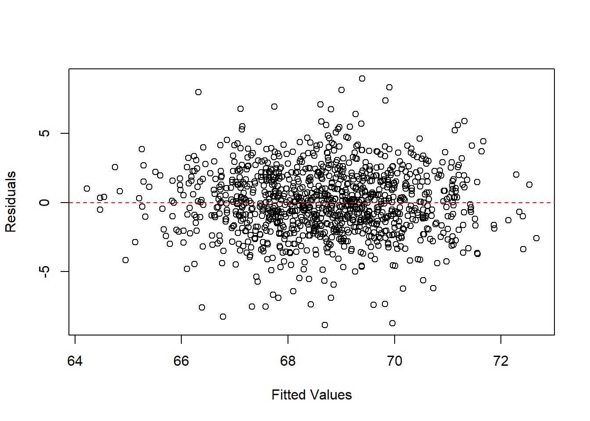
\[ \bar{e}=\frac{1}{n}\sum_{i=1}^ne_i=0 \]
\[ S_e^2=\frac{1}{n-2}\sum_{i=1}^ne_i^2 \]
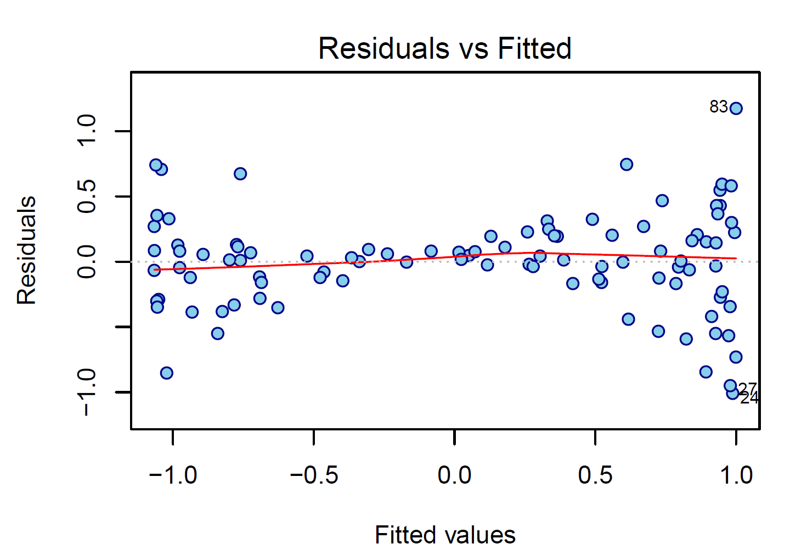
잔차에 대한 독립성 검정으로 Durbin-Watson 검정을 할 수 있음
통계적 가설
Durbin-Watson 검정통계량
\[ d=\frac{\sum_{i=2}^n(e_i-e_{i-1})^2}{\sum_{i=1}^ne_i^2} \]
검정법
\(d_L\)과 \(d_U\)는 설명변수의 개수 \(k\)에 의존하여 결정 됨
\(d\) 값의 범위는 0부터 4사이에 나타나며, 2에 가까울수록 독립에 가까움
오차항의 확률분포가 정규분포에서 많이 벗어나는 경우 정규성을 가정한 가설 검정 등의 추론을 할 수 없음
정규성을 만족해야 정규성 가정하에서의 추론이 유효하므로 오차항에 대한 정규성 검토가 필요함
오차항의 정규성을 그래프적으로 점검하는 방법으로 잔차들에 대해 분위수 대 분위수 그림(Q-Q plot; Quantile-Quantile plot)을 그려서 판단 할 수 있음
library(UsingR)
fit <- lm(sheight~ fheight, data=father.son)
qqnorm(fit$residual)
qqline(fit$residual)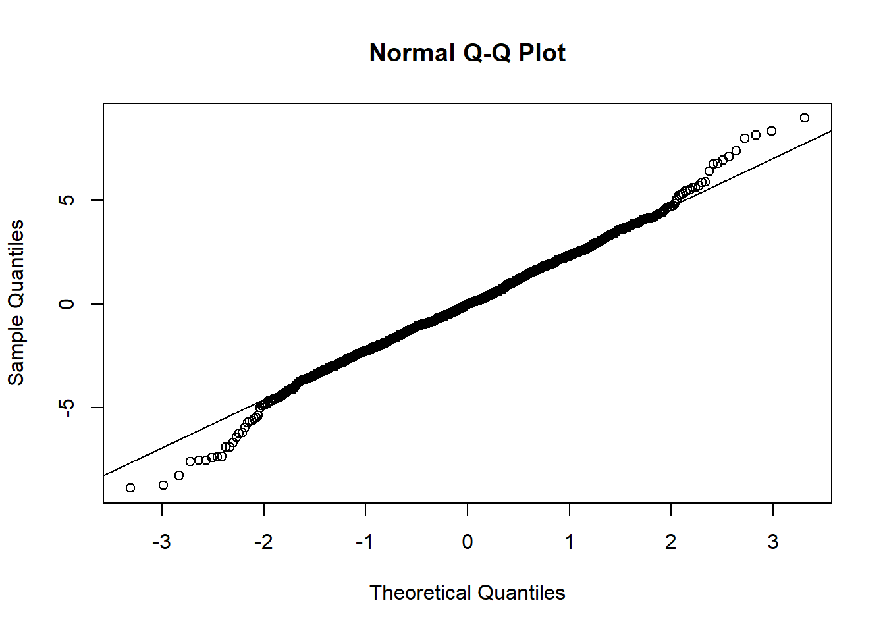
잔차의 정규성에 대한 검정으로 Shapiro-Wilks 검정을 이용할 수 있음
통계적 가설
Shapiro-Wilks 검정통계량
\[ W=\frac{(\sum_{i=2}^na_ie_{(i)})^2}{\sum_{i=1}^n (e_i-\bar{e})^2} \]
여기서 \(e_{(i)}\)는 \(\{e_1, \cdots, e_n\}\)를 순서대로 재배열한 잔차 순서통계량
\[ (a_1, \cdots, a_n)=\frac{m'V^{-1}}{m'V^{-1}V^{-1}m} \]
여기서 \(m=(m_1, \cdots, m_n)'\), \(m_1,\cdots, m_n\)은 표준정규분포에서 나온 표본에 대한 순서통계량의 기대값, \(V\)는 이러한 순서통계량들의 공분산행렬
x <- c(1.9, 0.8, 1.1, 0.1, -0.1, 4.4, 4.6, 1.6, 5.5, 3.4)
y <- c(0.7, -1.0, -0.2, -1.2, -0.1, 3.4, 0.0, 0.8, 3.7, 2.0)
plot(x,y)
out <- lm(y~x)
abline(out)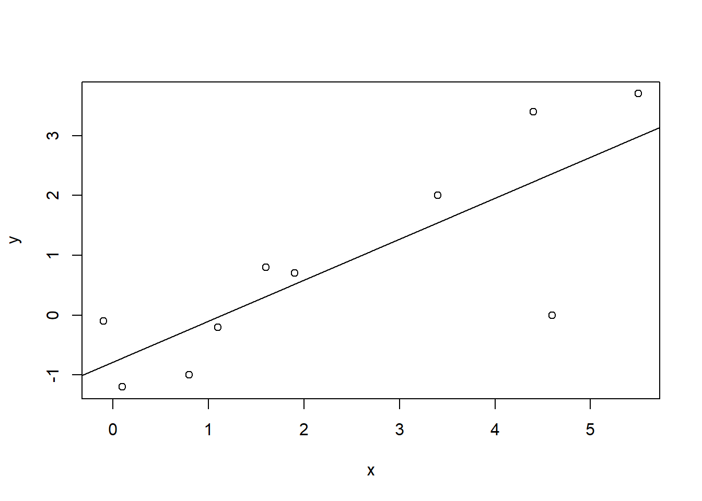
summary(out)
Call:
lm(formula = y ~ x)
Residuals:
Min 1Q Median 3Q Max
-2.3651 -0.4036 0.3208 0.6613 1.1720
Coefficients:
Estimate Std. Error t value Pr(>|t|)
(Intercept) -0.7861 0.5418 -1.451 0.18485
x 0.6850 0.1802 3.801 0.00523 **
---
Signif. codes: 0 '***' 0.001 '**' 0.01 '*' 0.05 '.' 0.1 ' ' 1
Residual standard error: 1.083 on 8 degrees of freedom
Multiple R-squared: 0.6436, Adjusted R-squared: 0.599
F-statistic: 14.45 on 1 and 8 DF, p-value: 0.005231pred_y <- predict(out, newdata=data.frame(x=x))
cbind(x,pred_y,y) x pred_y y
1 1.9 0.51543194 0.7
2 0.8 -0.23811424 -1.0
3 1.1 -0.03260165 -0.2
4 0.1 -0.71764364 -1.2
5 -0.1 -0.85465203 -0.1
6 4.4 2.22803692 3.4
7 4.6 2.36504531 0.0
8 1.6 0.30991935 0.8
9 5.5 2.98158310 3.7
10 3.4 1.54299493 2.0pred_y <- predict(out, newdata=data.frame(x=2.3))
pred_y 1
0.7894487 pred_y <- predict(out, newdata=data.frame(x=c(1, 2.2, 6.7)))
pred_y 1 2 3
-0.1011058 0.7209445 3.8036335 volume <- c(412, 953, 929, 1492, 419, 1010, 595, 1034)
weight <- c(250, 700, 650, 975, 350, 950, 425, 725)
book.lm <- lm(weight ~ volume)
summary(book.lm)
Call:
lm(formula = weight ~ volume)
Residuals:
Min 1Q Median 3Q Max
-89.674 -39.888 -25.005 9.066 215.910
Coefficients:
Estimate Std. Error t value Pr(>|t|)
(Intercept) 41.3725 97.5588 0.424 0.686293
volume 0.6859 0.1059 6.475 0.000644 ***
---
Signif. codes: 0 '***' 0.001 '**' 0.01 '*' 0.05 '.' 0.1 ' ' 1
Residual standard error: 102.2 on 6 degrees of freedom
Multiple R-squared: 0.8748, Adjusted R-squared: 0.8539
F-statistic: 41.92 on 1 and 6 DF, p-value: 0.0006445plot(book.lm)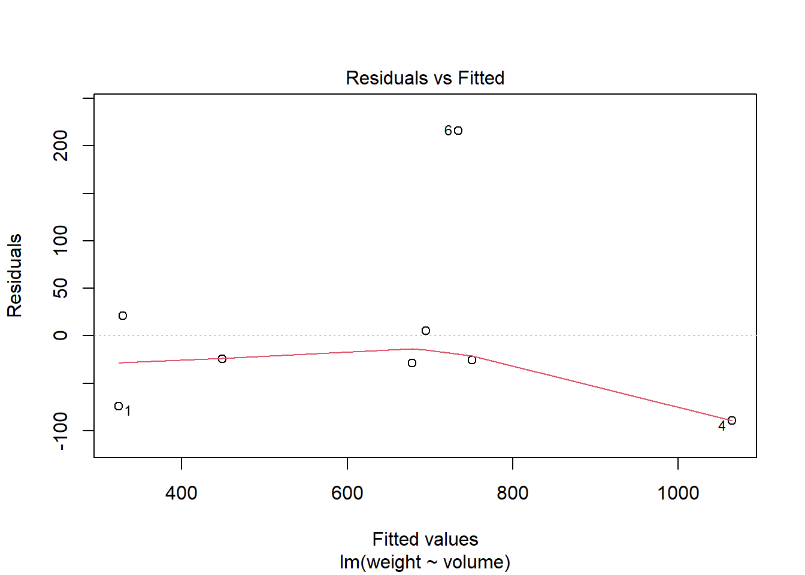
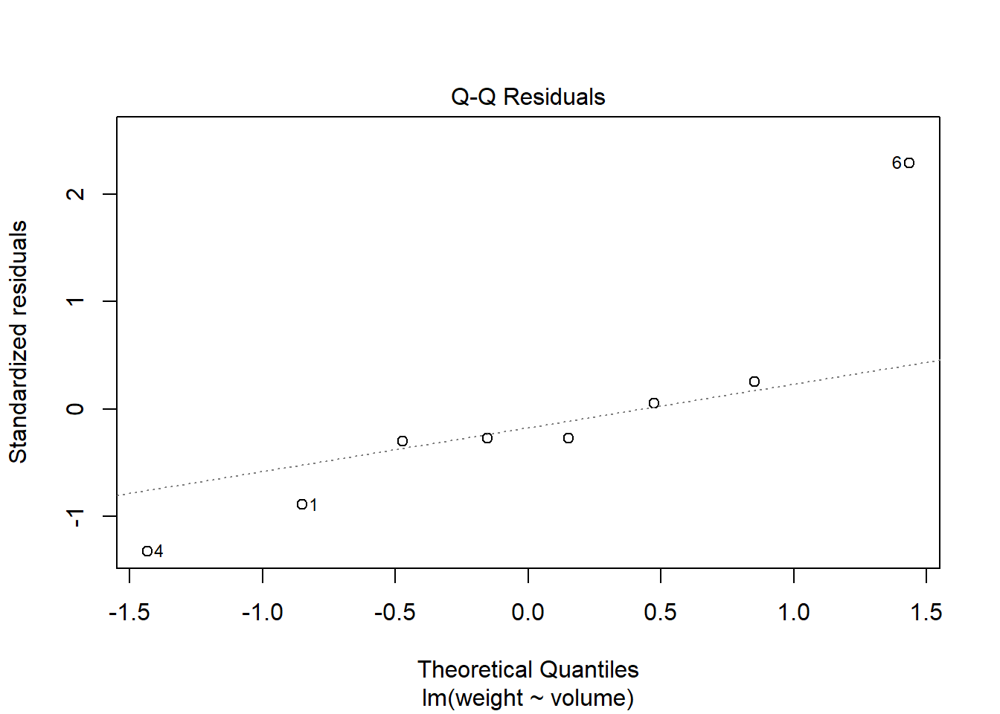
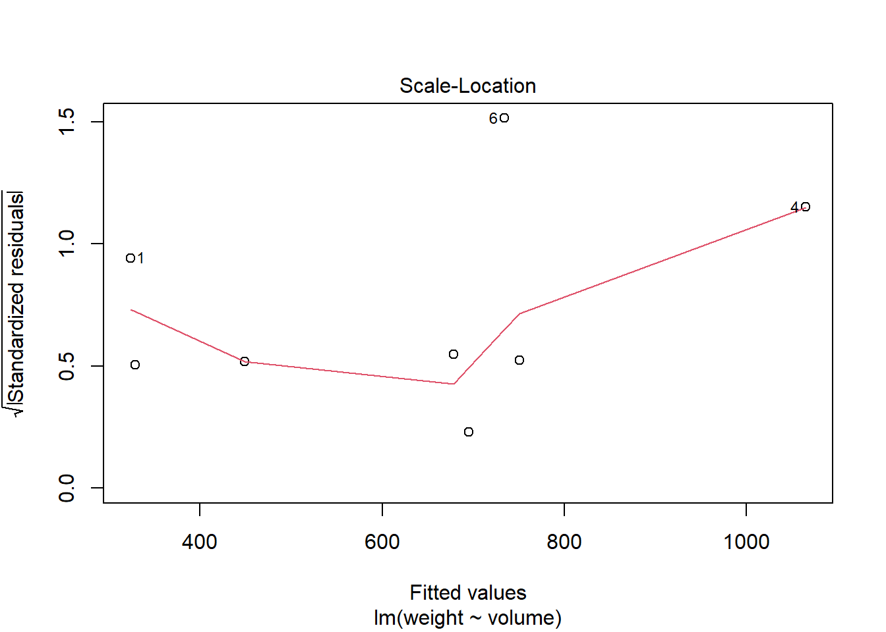
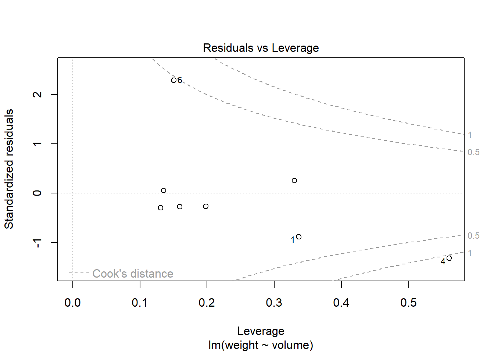
\[ \hat{weight}=41.3725+0.6859\times volume \]
\(R^2\)는 0.8748로 추정된 회귀식의 설명력이 높은 편
모형의 타당성에 대한 \(F\) 통계량은 41.92, p-value는 \(0.000644 < 0.05\)로 유의수준 \(5\%\)에서 모형이 유의한 것으로 나타남
기울기 회귀계수에 대한 유의성 검정으로 \(H_0:\beta_1=0\)에 대해 \(t\) 통계량은 6.475, p-value는 \(0.000644 < 0.05\)로 유의수준 \(5\%\)에서 귀무가설을 기각하게 되므로 추정된 회귀계수는 유의함
attributes(book.lm)$names
[1] "coefficients" "residuals" "effects" "rank"
[5] "fitted.values" "assign" "qr" "df.residual"
[9] "xlevels" "call" "terms" "model"
$class
[1] "lm"book.lm$coefficients(Intercept) volume
41.3724757 0.6858592 book.lm$residuals 1 2 3 4 5 6 7 8
-73.94646 5.00373 -28.53565 -89.67436 21.25253 215.90976 -24.45868 -25.55086 book.lm$fitted.values 1 2 3 4 5 6 7 8
323.9465 694.9963 678.5356 1064.6744 328.7475 734.0902 449.4587 750.5509 부분 회귀 또는 구간별 선형회귀는 하나의 직선으로 전체 자료의 관계를 설명하기 어려울 때 사용할 수 있다. 특정 기준점 전후로 기울기나 절편이 달라진다고 판단되는 경우, 구간을 나누어 서로 다른 회귀직선을 적합한다. 다만 기준점을 자료를 보고 임의로 정하면 과적합의 위험이 있으므로, 실제 분석에서는 이론적 근거 또는 별도의 모형 비교가 필요하다.
데이터의 부분에 따라 서로 다른 회귀모형을 적합해야 할 경우가 있음
여러 개의 부분집합에 대해 선형모형을 적합할 경우는 부분선형모형(piecewise linear model)을 적합할 수 있음
한 개의 설명변수(독립변수) \(X\)와 한 개의 반응변수(종속변수) \(Y\)간의 선형회귀모형
\[ Y=\begin{cases} \beta_0+\beta_1X+\epsilon, \,\,\, X<c\\ \gamma_0+\gamma_1X+\epsilon, \,\,\, X\ge c \end{cases} \]
y <- c(362, 357, 111, 703, 494, 410, 63, 616, 468, 973, 235, 180, 69, 305, 106, 155, 422, 44, 1008, 225, 321, 1001, 531, 143, 251, 216, 57, 136, 226, 169, 32, 75, 102, 4, 68, 102, 462, 295, 196, 50, 739, 287, 226, 706, 127, 85, 234, 153, 4, 373, 54, 81)
x <- c(23.5, 22.4, 6.1, 35.9, 35.5, 23.2, 9.1, 27.5, 28.6, 41.3, 16.9, 18.2, 9, 28.6, 12.7, 11.8, 27.9, 21.6, 45.9, 11.4, 16.6, 40.7, 22.4, 17.4, 14.3, 14.6, 6.6, 10.6, 14.3, 3.4, 5.1, 4.1, 4.1, 1.7, 7.5, 7.8, 22.6, 8.6, 7.7, 7.8, 34.7, 15.6, 18.5, 35, 16.5, 11.3, 7.7, 14.8, 2, 12.4, 9.2, 11.8)
data <- data.frame(y,x)
head(data) y x
1 362 23.5
2 357 22.4
3 111 6.1
4 703 35.9
5 494 35.5
6 410 23.2Break <- 22.4
g1 <- lm(y~x, data=data, subset=(x<Break))
g2 <- lm(y~x, data=data, subset=(x>=Break))
summary(g1)
Call:
lm(formula = y ~ x, data = data, subset = (x < Break))
Residuals:
Min 1Q Median 3Q Max
-194.58 -64.23 -15.89 55.98 213.31
Coefficients:
Estimate Std. Error t value Pr(>|t|)
(Intercept) 53.368 33.365 1.600 0.11896
x 8.574 2.803 3.059 0.00431 **
---
Signif. codes: 0 '***' 0.001 '**' 0.01 '*' 0.05 '.' 0.1 ' ' 1
Residual standard error: 84.22 on 34 degrees of freedom
Multiple R-squared: 0.2159, Adjusted R-squared: 0.1928
F-statistic: 9.36 on 1 and 34 DF, p-value: 0.004307summary(g2)
Call:
lm(formula = y ~ x, data = data, subset = (x >= Break))
Residuals:
Min 1Q Median 3Q Max
-227.885 -40.894 3.498 92.715 165.864
Coefficients:
Estimate Std. Error t value Pr(>|t|)
(Intercept) -240.926 128.548 -1.874 0.0819 .
x 27.056 4.037 6.702 1.01e-05 ***
---
Signif. codes: 0 '***' 0.001 '**' 0.01 '*' 0.05 '.' 0.1 ' ' 1
Residual standard error: 118.7 on 14 degrees of freedom
Multiple R-squared: 0.7624, Adjusted R-squared: 0.7454
F-statistic: 44.92 on 1 and 14 DF, p-value: 1.007e-05plot(y~x)
abline(v=Break, lty=5)
segments(min(x), g1$coef[1]+g1$coef[2]*min(x),
Break, g1$coef[1]+g1$coef[2]*Break)
segments(Break, g2$coef[1]+g2$coef[2]*Break,
max(x), g2$coef[1]+g2$coef[2]*max(x))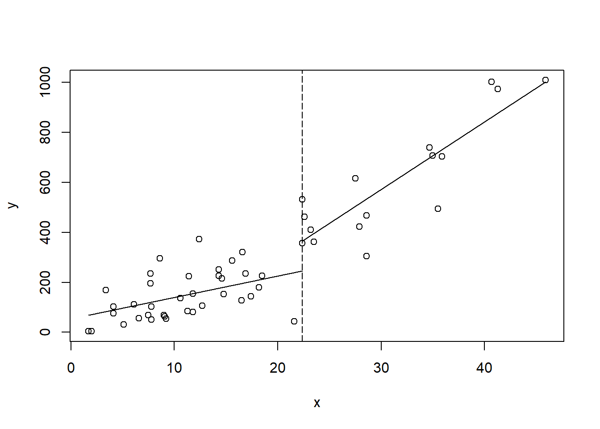
\[ Y=\begin{cases} 53.670+8.572X, \,\,\, X<22.4\\ -240.926+27.056X, \,\,\, X\ge 22.4 \end{cases} \]
일반적인 회귀분석에서는 절편을 포함하는 모형을 기본으로 사용한다. 원점을 지나는 회귀모형은 \(X=0\)일 때 \(Y=0\)이라는 강한 사전 지식이 있을 때만 사용하는 것이 바람직하다. 단순히 절편의 p-value가 유의하지 않다는 이유만으로 절편을 제거하는 것은 적절하지 않을 수 있다.
단순선형회귀모형에서 회귀계수 \(\beta_0\)는 일차함수에서 절편에 해당함
설명변수 값이 0일 때 반응변수가 0이라는 정보를 가지고 있다면 \(\beta_0\)는 0이 되고 이를 원점을 지나는 회귀모형이라 함
원점을 지나는 단순선형회귀모형
\[ Y_i = \beta_1 X_i +\epsilon_i, \,\,\, \epsilon_i \sim N(0, \sigma^2), \,\,\, i=1,\ldots, n \]
여기서 오차항 \(\epsilon_i\) 들은 서로 독립
최소제곱법으로 회귀계수 \(\beta_1\)을 구하기 위한 오차의 제곱합과 이를 \(\beta_1\)에 대해 미분하면
\[ S(\beta_1)=\sum_{i=1}^n \epsilon_i^2 =\sum_{i=1}^n (Y_i - \beta_1 X_i )^2 \]
\[ \frac{\partial}{\partial \beta_1}S(\beta_1) = -2\sum_{i=1}^n (Y_i-\beta_1X_i)X_i \]
\[ \beta_1\sum_{i=1}^n X_i^2 = \sum_{i=1}^n X_iY_i \]
\[ \hat\beta_1 = \frac{\sum_{i=1}^n X_iY_i}{\sum_{i=1}^n X_i^2} \]
\[ \sum_{i=1}^n e_i X_i =0 \]
\[ SST =\sum_{i=1}^n Y_i^2, \,\,\, SSR=\sum_{i=1}^n \hat Y_i^2, \,\,\, SSE=\sum_{i=1}^n (Y_i-\hat Y_i)^2 \]
총제곱합 \(SST\)의 자유도는 \(n\)이며, \(SSR\)의 자유도는 \(1\), \(SSE\)의 자유도는 \(n-1\)
회귀모형의 유의성 검정에 대한 가설
\[ H_0 :\beta_1 =0 \,\,\, vs. \,\,\, H_1:\beta_1 \ne 0 \]
\[ F=\frac{MSR}{MSE}=\frac{SSR/1}{SSE/(n-1)}\sim F(1,n-1) \]
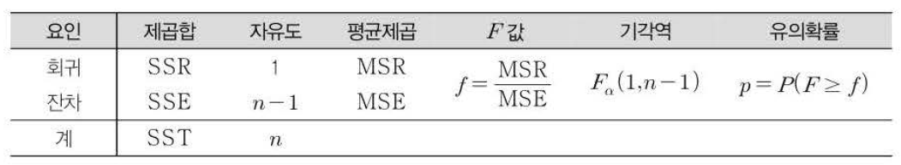
회귀분석에서 설명변수는 연속형 변수뿐 아니라 범주형 변수도 사용할 수 있다. 범주형 변수를 회귀모형에 포함하려면 기준범주(reference category)를 정하고, 나머지 범주를 더미변수로 표현한다. 이때 회귀계수는 기준범주와 비교한 평균 차이로 해석한다.
회귀분석에 사용되는 독립변수는 기본적으로 연속형 변수여야 함
하지만 때에 따라 명목형 변수를 사용할 때가 있는데 그때는 명목형 변수를 더미변수(dummy variable, 가변수)화 하여 사용함
더미변수화를 하는 방법은 여러 가지가 존재하나 일반적으로 원래 변수가 지닌 범주의 개수보다 하나 적은 개수의 변수를 생성함
더미변수를 이용한 회귀분석을 위해 아래 예제에 교육수준 변수를 고려하면,
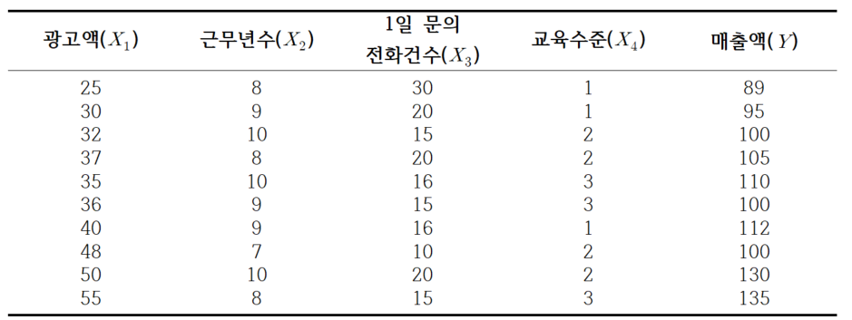
\[ Y= \beta_0 + \beta_1X_{41} +\beta_2X_{42} + \epsilon \]
여기서 \(X_{41}\)과 \(X_{42}\)는 교육수준의 더미변수
교육수준의 더미변수를 지정하는 방법
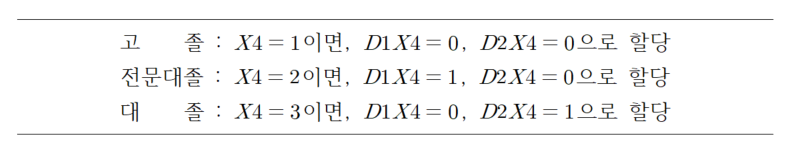
y <- c(89, 95, 100, 105, 110, 100, 112, 100, 130, 135)
x4 <- c(1, 1, 2, 2, 3, 3, 1, 2, 2, 3)
data1 <- data.frame(y,x4)
fit <- lm(y~factor(x4),data=data1)
summary(fit)
Call:
lm(formula = y ~ factor(x4), data = data1)
Residuals:
Min 1Q Median 3Q Max
-15.000 -8.750 -4.375 9.083 21.250
Coefficients:
Estimate Std. Error t value Pr(>|t|)
(Intercept) 98.667 8.601 11.472 8.6e-06 ***
factor(x4)2 10.083 11.378 0.886 0.405
factor(x4)3 16.333 12.163 1.343 0.221
---
Signif. codes: 0 '***' 0.001 '**' 0.01 '*' 0.05 '.' 0.1 ' ' 1
Residual standard error: 14.9 on 7 degrees of freedom
Multiple R-squared: 0.2084, Adjusted R-squared: -0.01776
F-statistic: 0.9215 on 2 and 7 DF, p-value: 0.4413위 모형에서 factor(x4)의 첫 번째 범주가 기준범주가 된다. 나머지 범주의 회귀계수는 기준범주와 비교한 평균 차이를 의미한다. 예를 들어 factor(x4)2의 회귀계수가 양수이면 교육수준 2 집단의 평균 반응값이 교육수준 1 집단보다 높다는 뜻이다.